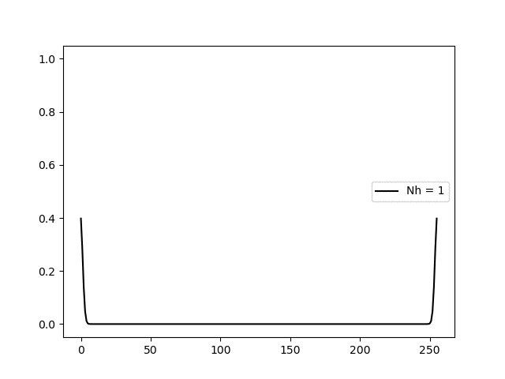
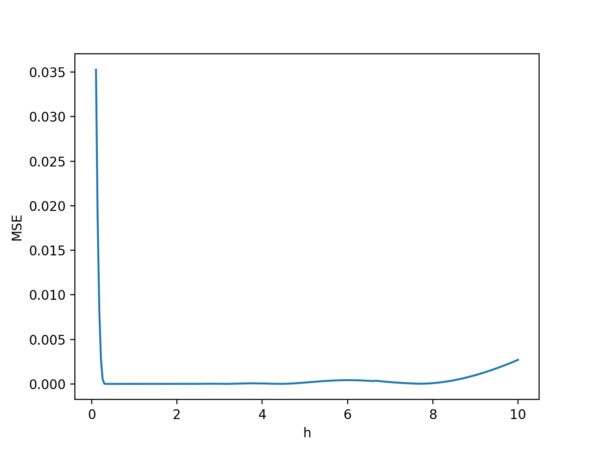
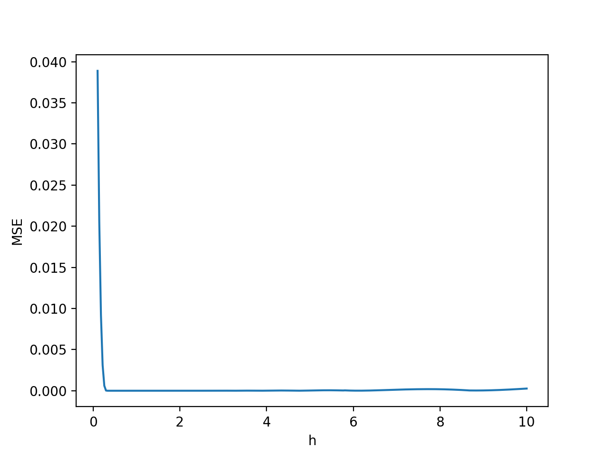
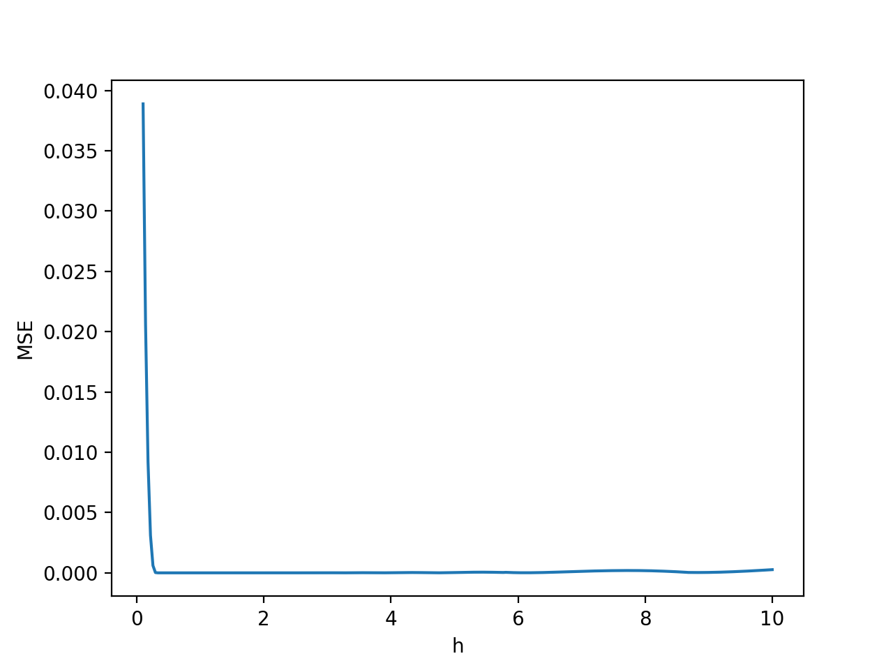
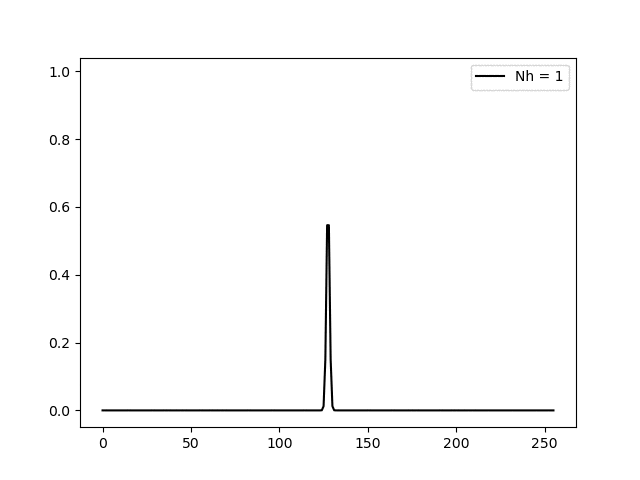
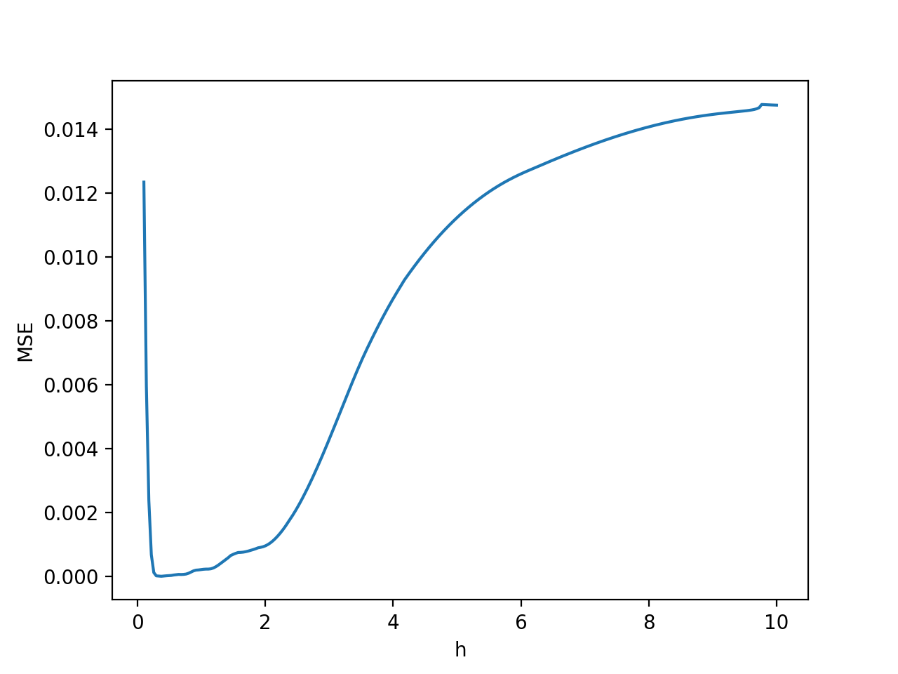
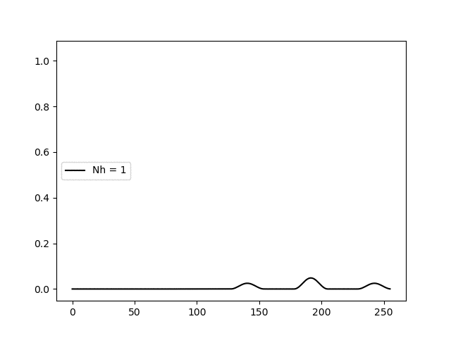
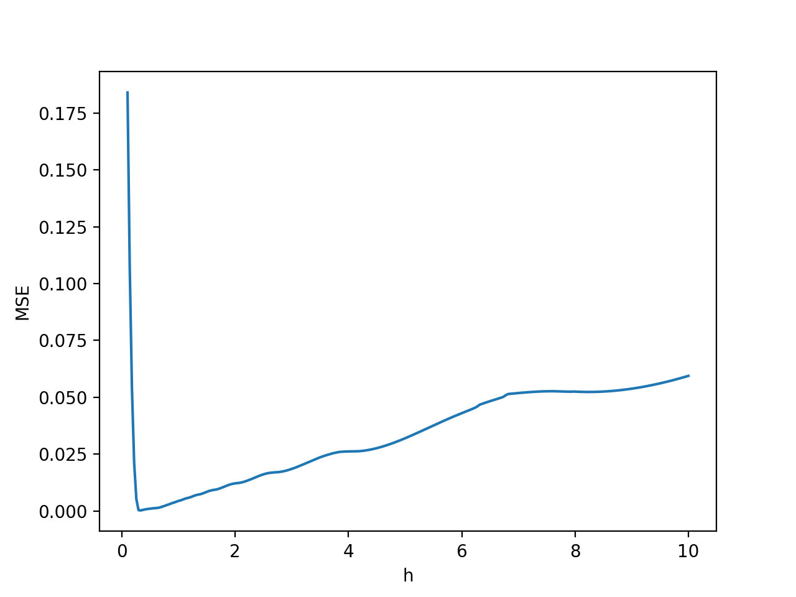

Representing a signal using scattering data
At its core SCSA can be understood as an eigenvalue problem for the Schrödinger equation given some constraints for the signal to be represented. Recall the continuous definition of SCSA (for info on this topic please go to the Theory tab)as the eigenvalue $$-h^2\frac{d^2\psi(t)}{dt^2} - y(t)\psi(t) = \lambda\psi(t)$$
Where \(h > 0\), \(y(t) \geq 0 \quad \forall t \in \mathbb{R}\). Then \(y(t)\) can be represented by \(y_h(t)\) given by $$y_h(t) = 4h\sum_{n=1}^{N_h} \kappa_{nh} \psi_{nh}^2(t), \quad t \in \mathbb{R} \quad \quad (1)$$
Now when we want to deal with discrete signals then we have to give a representation of the Schrödinger equation in descrete form. We consider a grid of \(M\) equidistant points \(t_j\), \(j=1,...,M\) such that $$a=t_1 < t_2 < \cdots < t_{M-1} < t_M = b$$
We denote \(y_j\) and \(\psi_j\) the values of \(y\) and \(\psi\) at the grid points \(t_j\) , \(j = 1, . . . , M\) $$y_j = y(t_j), \quad \psi_j = \psi(t_j), \quad j=1,...,M$$
We represent the Schrödinger equation in the discrete space as the following matrix eigenvalue problem $$(-h^2\textbf{D}_2 - diag(\textbf{Y}))\Psi = \lambda\Psi$$
Where \(\textbf{D}_2\) is the second order differentiation matrix made using fourier psuedo-spectral method and \(diag(\textbf{Y})\) is the diagonal matrix whose elements are \(y_j\), \(j=1,...,M\) and \(\Psi = [\psi_1 \quad \psi_2 \quad \cdots \quad \psi_{M-1} \quad \psi_M]^T\). Then the representation \(y_h\) of \(y\) is as described in (1).
Examples
Following there are some examples of functions represented using the SCSA method. Each of the following of 256 data points of the specified function.
$$y(t) = cn^2\left(K(m)x| m \right)$$ $$K(m) = \int_0^{\frac\pi2} \frac{d\theta}{\sqrt{1-m\sin^2(\theta)}}$$
 $$y(t) = e^{-t^2}$$
.gif) 

$$y(t) = e^{-t^2}\cos^2(2\pi t)$$
 
$$y(t) = sign(\sin(2\pi t)) + 1$$
 